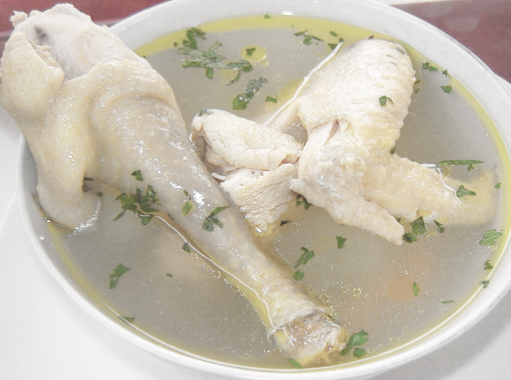
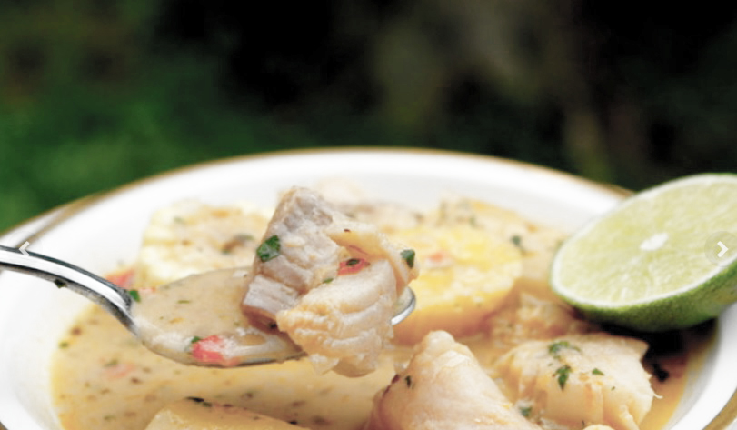
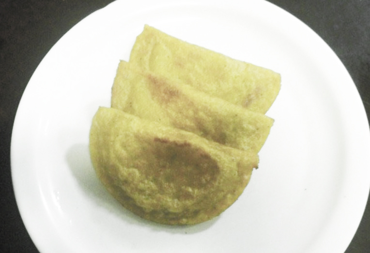

Considerado un plato típico de la región Costa, sobre todo de las poblaciones rurales de Manabí, se elabora a base de gallina criolla, cebolla paitella, ajo, agua, todo esto saborizado con sal y hojitas de cilantro.
Una deliciosa sopa de pescado muy típica de la provincia de Manabí. Lleva pescado, yuca, platanos maduros, choclo, mani, cebolla, ajo, cilantro y otros condimentos
Exquisitas empanadas que son muy típicas de la provincia de Manabí. Se preparan con una masa de plátano verde y se rellenan con queso, carne o mariscos
Caldo de Gallina Criolla

Caldo de Gallina Criolla
Ingredientes: 1 gallina criolla, 1 yuca, 1 cebolla colorada, 1 cebolla blanca, 1 pimiento; aliño, ajo, sal y cilandro al gusto.
Preparación: Despresar la gallina, poner a hervir en agua suficiente y agregar la cebolla y todos los aliños. Cuando esté blanda la gallina, agregar la yuca y dejar hervir hasta que ablande. Por último, añadir la sal, cebolla blanca y cilantro.
Biche de Pescado

Biche de Pescado
Ingredientes: 2 libras de pescado, ½ libra de maní, 3 litros de agua, 1 mazo de fréjol tierno, 1 yuca, 2 plátanos maduros, 2 plátanos verdes, 1 trozo de zapallo, 1 onza de habichuelas, 2 achogchas, 2 pepinos, 2 camotes, 1 trozo de col, 1 cebolla colorada, 1 pimiento, 1 choclo, 3 dientes de ajo, sal y pimienta al gusto.
Preparación: Se pone a hervir el agua con el maní; y, a medida que se va cocinando el maní, se van incorporando los demás ingredientes de acuerdo a su consistencia o tiempo requerido para su cocción. El pescado se le agrega unos 15 minutos antes de su terminación.

Empanadas de Verde
Ingredientes: 4 plátanos verde frescos, 1 onza de manteca de cerdo, sal al gusto, carne (o queso, o pollo o cangrejo). Relleno: 4 ramas de cebolla blanca picada, sal, pimienta y comino al gusto.
Preparación: Pelar los plátanos y partirlos en tres pedazos cada uno; ponerlos a cocinar con agua y sal hasta que estén suaves, sacar de uno en uno los pedazos y molerlos. Amasar hasta que estén bien elásticos (puede ayudarse con un poco del agua en que se los cocinó). Cuando la masa se pegue en las manos añadir un poquito de manteca, tapar y dejar la masa en un lugar bien abrigado.